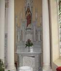
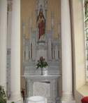

-

Owning Retirement Homes. Formerly Sue Ryder Homes
-

A sea of yellow rapeseed. Rich growth of April May
-
 Lacy Carpenter
Lacy Carpenter
Performing with American Singers in Piltown Church
-
 Waterford's new Bridge
Waterford's new Bridge
The new bridge is the most modern landmark to be seen from around Templeorum village and surrounds .
-
 Temleorum and Corbally Hill
Temleorum and Corbally Hill
Corbally Hill overlooks Templeorum and the Suir Valley.
-
 Fiddown Wooden Bridge
Fiddown Wooden Bridge
Fiddown Bridge was constructed in 1853 by Waterford and Limerick Railway Company. The bridge was taken over by Great Southern and Western Railway in 1901. It was the last toll bridge in Ireland, until the modern toll roads were introduced.
-
 Tybroughney Stones
Tybroughney Stones
Tybroughney Stones in the Garaveyard in Tybroughney.Maintained by interested people of Tybroughney.
-
 Forgiveness Stone Eucharistic Congress
Forgiveness Stone Eucharistic Congress
The Forgiveness Stone where people had an opportunity to beg forgiveness for the sins of the past and in particular for forgiveness where children were harmed.
-
 Sunset over the Suir
Sunset over the Suir
Sunset over the Suir from "Fiddown Bridge".
-
 Fiddown Bridge
Fiddown Bridge
Replacement bridge at Fiddown.Gateway to Waterford
Welcome To Templeorum Parish Co. Kilkenny
Celebrating a Catholic Funeral
The Catholic Church has developed a deep and rich tradition in its liturgy for funerals. This liturgy seeks to balance the need to console those who are mourning with the hope in the person of Jesus Christ who is our life and our resurrection. The Catholic Funeral Rites are a meaningful expression of faith and are a meaningful experience. They commend the deceased to the mercy of God, and as we give thanks to God for the life of a Christian, we pray that God may forgive whatever sins the deceased may have committed through human weakness. The Funeral Rites" represent a public sharing with the personal grief of the family and the public liturgy of the Church.
In order to preserve the very sacred nature of the Funeral Liturgy, certain practices must be observed.
Informing The Priest
Following the death of a parishioner, the Priest must be notified immediately by a family member, preferably one who is responsible for making the funeral arrangements. This will enable the Priest, in consultation with the family and the Under taker, to facilitate the arrangements and to meet with the family" well in advance to discuss the necessary aspects of the Funeral Rites.
Rosaries
It is becoming customary to pray the Rosary on two consecutive nights prior to the Reception at the Church. It is not always possible for the Priest to attend and lead the first Rosary. In that event, the Rosary may be led by a family member of friend or by one of a number of Leaders to be nominated by the Liturgical Committee for that purpose.
Reception of the Body at the Church.
The Reception of the body at the Church signifies the transition from the expression of the -private, personal family grief to the public expression in the liturgy by the parish community. It is also the first step in returning to God the person that has been loved. If relatives wish to drape the coffin with the national flag or any other flag or secular emblem, it must be removed before the coffin enters the Church. The prayers and symbols used at the Reception recall the dignity of each Christian which was given to them in Baptism. The coffin is sprinkled with Holy Water as a remembrance that in the Waters of Baptism, Christians receive the pledge of Eternal Life. The coffin is placed before the Paschal Candle, symbolizing God's undying presence and His victory over death by his Resurrection. Other Christian symbols such as the Cross or the Book of the Gospels may also be placed on the coffin at this time. The family may also wish to carry with them other emblems which reflect the deceased's personality or interests. This is permissible on the clear understanding that they do not conflict with the Christian symbols that are used in the ceremony. A place will be provided for such items either near to the coffin or the family but they must not displace the Christian symbols representing the baptismal calling of the deceased.
The Word of God
The Funeral Mass is the central liturgical celebration for the deceased. The Word of God offers life, hope and inspiration. A careful selection of sacred scripture for funerals provides the family and the community with the opportunity to hear God speak to them in their needs, sorrows, fears and hopes. There is a variety of suitable scriptural readings from the Old and New Testaments which are appropriate the Funeral Mass. These scriptural readings may not be replaced by non-biblical or secular readings. It is essential that the readings be read clearly and with sensitivity. A family member or friend may
undertake these readings but pressure must not be placed on anyone, particularly if they are not regular readers at Mass. If required, a Parish Reader will be available to undertake this ministry. If the family requests, reflections taken from Christian literature may be used at a later stage in the Funeral Mass. However, some poems and passages are best kept to the less formal stages of the Funeral Rites in the home, the funeral home or at the graveside.
Homily
The Homily is given by the Priest and is prepared in consultation with the family of the deceased. The Homily is based on the Scriptures and on the life of the deceased in that he or she endeavored to live out the virtues of being a true Christian.
Prayers of the Faithful
The Prayers of the Faithful, or general intercessions, call upon God to bring comfort to those who mourn and to show mercy to the deceased. Family members or friends may wish to participate in these prayers. If composed by the family, the Priest will provide guidance regarding the format and suitable content.
Offertory Gifts
The traditional gifts presented for the Eucharist are the bread and wine. It is desirable that family members bring these gifts to the altar. At this point in the Mass, it is not appropriate to present symbols of the deceased's past life. To do so is a confusion of the presentation of the bread and wine which become the Eucharist for us. Furthermore, "gifts" are "given", not merely as a "symbol" or gesture only to be taken back at the end of the Mass. If it is requested that suitable symbols associated with the interests or work of the deceased be part of the Funeral Rites, they should be carried into the Church at the Reception of the Body.
Words of Appreciation
There are occasions when a family member may wish to address the mourners. The Funeral Rites offer a number of junctures at which to make such addresses. Personal sentiments are more appropriately spoken in the intimacy of the family home or at the funeral home. Words in the form of an 'oration* are better suited to the traditional location of the graveside, or to the hall or hotel afterwards. The Reception of the Body also provides an opportunity for a family member to offer brief words of remembrance and to acknowledge those who have supported the family in their grief. The Funeral Mass is primarily an act of praise of God and therefore is either the appropriate occasion or place to insert a speech or 'eulogy*. In deference to the reverence due to the celebration of the Eucharist, no exceptions will be made to this rule.
Music
Music for funerals should always be chosen with great care and should, in word and tone, is primarily in praise and thanksgiving to God. Non-liturgical music is unacceptable during the Funeral Mass. In consultation with the Priest, suitable music and hymns should be selected for the Reception of the Body, the Funeral Mass and the Final Commendation. It is important to remember that the congregation be able to participate as fully as possible. Hymns, songs, chants and instrumental music must be religious in content and must reflect the sacred nature of the occasion. Preference should be given to the Response to the Psalm, Gospel Acclamation, Great Amen and the Song of Farewell. The use of pre-recorded or taped music during the celebration of Mass is completely discouraged as it is an intrusion into the celebration of a living, worshipping community.


 
